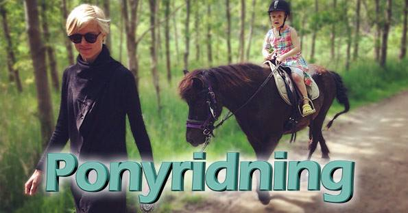
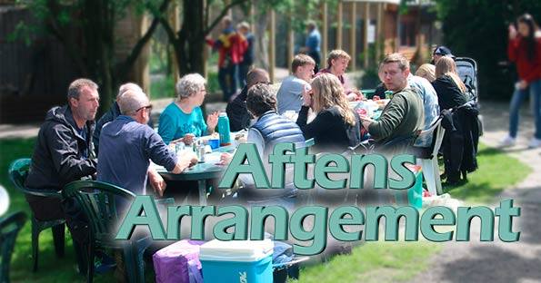
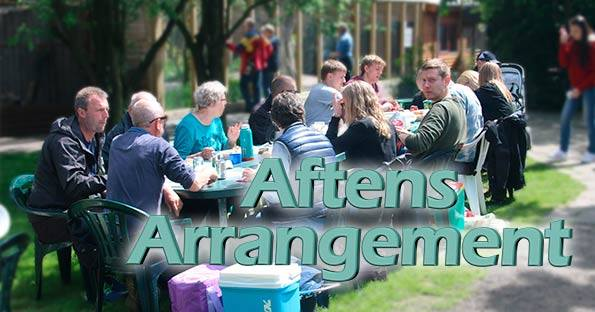
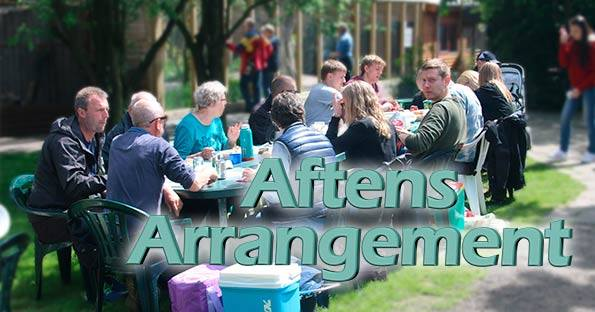
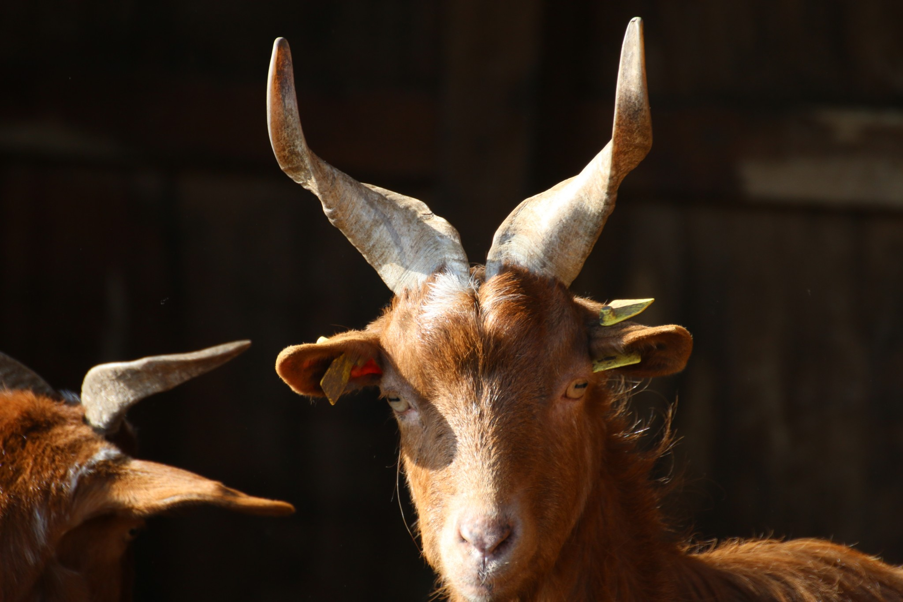

 


❮
❯
Velkommen til Skærup Zoo
Skærup Zoo er mere end en samling dyr. Vores mål er at formidle viden om dyr, for der igennem at medvirke til bevarelse af truede dyrearter og forståelse for naturen. I Skærup Zoo kan du opleve mere end 100 forskellige dyrearter. Du kommer helt tæt på legesyge aber, farlige rovdyr og søde dyrebørn. På legepladsen kan børnene muntre sig eller de kan kæle med de søde klappedyr. De fleste dyr må fodres med special foder, der kan købes i kiosken for 20,- pr. pose. På gensyn i Skærup Zoo.
Nyheder -SKAL VÆRE LINK TIL NYHEDER
Nye Italienske Beboere
Nye Skruehornsgeder
Vi har fået nye skruehornsgeder Gederne har overtaget anlægget, hvor zebraerne gik.